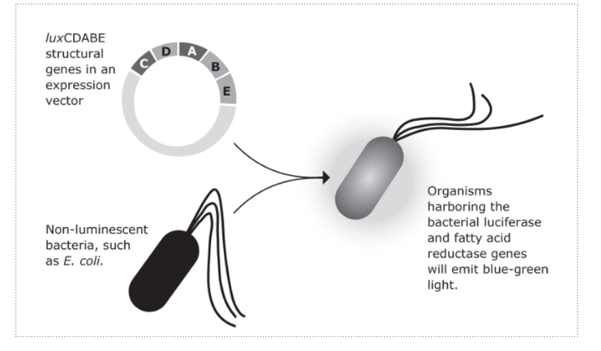
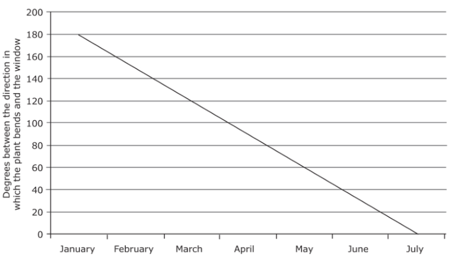
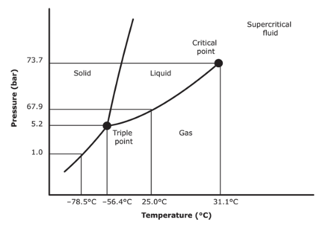

Question 1
Tuberculosis is caused by the mycobacterium, Mycobacterium tuberculosis, which kills approximately half of all infected patients. For many years, M. tuberculosis was susceptible to drug therapy; however, like many other disease-causing organisms, new drug resistant strains of tuberculosis have emerged. Many theories have been postulated to explain the emergence of these resistant strains (also known as “superbugs”) but most health-care professionals blame the over prescription of antibiotics as well as their misuse by patients. Today, before a tuberculosis patient can be treated, it is first necessary to find out which strain of bacterium is causing the disease and then to find a drug that will kill that particular strain. Fortunately, a new technique has been discovered that aids this process. Scientists can now insert luciferase, the enzyme that makes fireflies glow in the dark, into tuberculosis cells taken from the patient, which makes the tuberculosis cells glow in the dark (see Figure)
With their new glow-in-the-dark organisms, scientists can then test different drugs to see whether they kill the bacteria (which stop glowing). This new test can be done in days, which is faster than previous tuberculosis tests which required up to five weeks.
Question 2
Tuberculosis is caused by the mycobacterium, Mycobacterium tuberculosis, which kills approximately half of all infected patients. For many years, M. tuberculosis was susceptible to drug therapy; however, like many other disease-causing organisms, new drug resistant strains of tuberculosis have emerged. Many theories have been postulated to explain the emergence of these resistant strains (also known as “superbugs”) but most health-care professionals blame the over prescription of antibiotics as well as their misuse by patients. Today, before a tuberculosis patient can be treated, it is first necessary to find out which strain of bacterium is causing the disease and then to find a drug that will kill that particular strain. Fortunately, a new technique has been discovered that aids this process. Scientists can now insert luciferase, the enzyme that makes fireflies glow in the dark, into tuberculosis cells taken from the patient, which makes the tuberculosis cells glow in the dark (see Figure)
With their new glow-in-the-dark organisms, scientists can then test different drugs to see whether they kill the bacteria (which stop glowing). This new test can be done in days, which is faster than previous tuberculosis tests which required up to five weeks.
Question 3
Check out the passage on plants below, and answer the question that follows.
When plants respond to an environmental stimulus by growing in a particular way, that response is called a tropism.
There are five kinds of tropism:
- phototropism - a response in which plants turn toward the light
- geotropism - a response in which roots grow toward the earth and the shoots and flowers grow toward the sky
- thigmotropism - a response in which plants curl around any object they touch
- hydrotropism - a response in which plants’ roots grow toward a source of water
- chemotropism - a positive attraction of roots toward the presence of certain chemicals.
A student decides to study the way in which a particular plant responds to sunlight over a six-month period. At the beginning of the study, the student moves the plant, which originally bent toward a nearby window, so that the plant bends directly away from the window, and the angle between the direction in which the plant bends and the window is 180˚. The graph below shows the changes in the way that the plant bends as the year progresses.
Question 4
The transfer of heat occurs when particles move from an object with a high temperature to an object with a low temperature. An exothermic reaction occurs when heat is released in an energy transfer, while an endothermic reaction occurs when heat is absorbed in the energy transfer. Heat transfer can occur via either conduction, which occurs when objects are in direct contact with one another, and convection currents, which involve the cyclic movement of fluid or gas, away from a heat source. Consider the following situation: When setting up their campsite, Kristy and Eliz decided to build a campfire. After starting the fire, both girls felt much warmer than they did before the fire was made.
Question 5
All matter exists in one of three phases: as a solid, liquid, or gas. Solids are rigid in shape and usually the densest form of matter. Both liquids and gases are generally less dense and able to deform to take on the shape of a container, with gas molecules being the least constrained. The most notable exception to the density rule is water. Liquid water is actually denser than solid water (ice). You know that this is true because you have probably noticed that lakes and waterways freeze from the top downas opposed to the bottom up. For the same reason, ice cubes float in a glass of water. Pressure and temperature affect the phase that matter is found in. For example, at high pressure and low temperature, matter is more likely to be solid. Conversely, at low pressure and high temperature, matter is often found in gaseous state. By changing pressure and temperature, researchers can change the phase of a substance. The following diagram depicts the phase that carbon dioxide will be found in based on the temperature and pressure.
The dark black lines represent phase equilibria where there is more than one phase present at a given temperature and pressure.
1. If a tuberculosis cell with luciferase is treated with a drug but keeps on glowing, which of the following is most likely the case?
2. What is likely to be the most important reason to save time on a tuberculosis test?
3. The plant’s movements toward the window are an expression of which of the following?
4. Based on the information provided, which of the following is true?
5. Adding salt to a pot of boiling water temporarily stops the water from boiling. Which of the following is the best explanation for this occurrence?